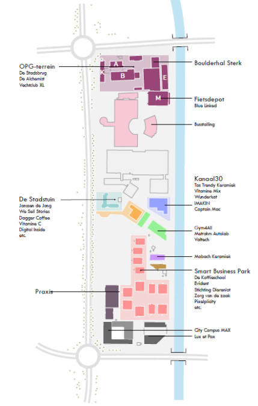

Een broedplaats
onder druk
Vechtclub XL zit in een voormalig industrieel pand aan de Merwedekanaalzone in Utrecht. Hier wordt voortdurend iets gemaakt — in letterlijke en figuurlijke zin. Maar deze positie is niet vanzelfsprekend. Stijgende vastgoedprijzen en druk op stedelijke ruimte maken het voor broedplaatsen als Vechtclub XL steeds lastiger om te blijven bestaan. Commerciële ontwikkeling en woningbouw liggen constant op de loer.

Groeiend
inzicht
Tegelijkertijd groeit de erkenning dat plekken als Vechtclub XL onmisbaar zijn voor een levendige stad. Gemeenten zien steeds vaker wat creatieve werkruimtes bijdragen aan innovatie, ondernemerschap en stedelijke leefbaarheid. Voor Utrecht speelt dit letterlijk in de achtertuin: de Merwedekanaalzone is een van de grootste stedelijke transformaties van het land. Hoe die zone zich ontwikkelt, bepaalt mede of Vechtclub XL er een structurele plek in heeft.
"Plekken waar iets gemaakt wordt — dat is wat Vechtclub XL onmisbaar maakt."
Doorwerken
aan toekomst
De gemeente beschikt over de instrumenten om Vechtclub XL's positie te versterken: subsidies, bestemmingsplannen, convenanten. Of ze dat ook doet, is een van de bepalende vragen voor de toekomst. Ondertussen blijft Vechtclub XL gewoon draaien. Ondernemers werken er aan hun vak, ontmoeten elkaar, werken samen met studenten en onderwijsinstellingen, en bouwen aan iets wat moeilijk in een spreadsheet past. Dat is precies de kracht van de plek — en precies wat het de moeite waard maakt om voor te strijden.
